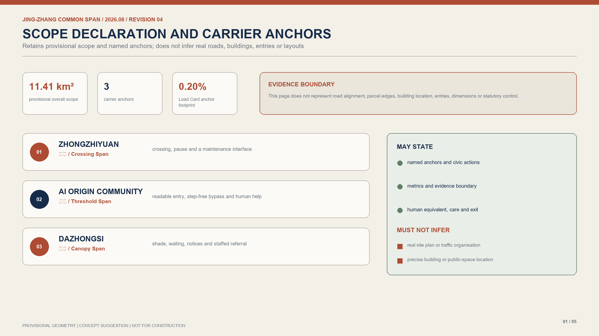
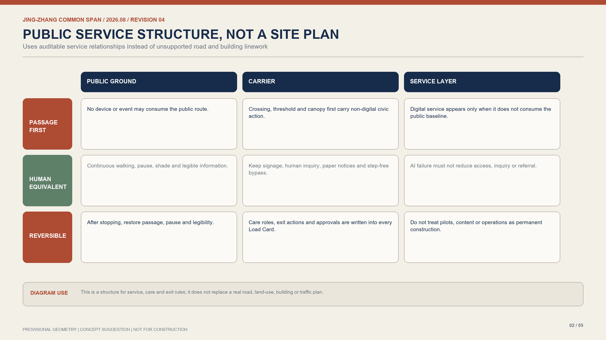
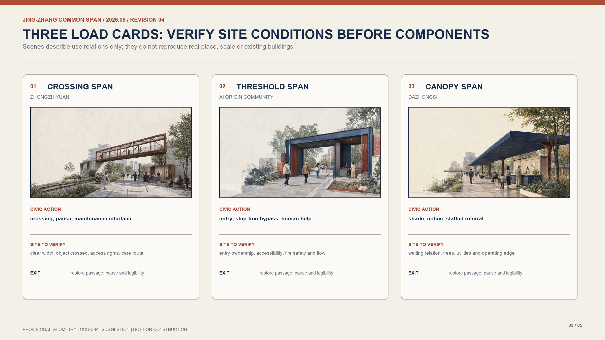
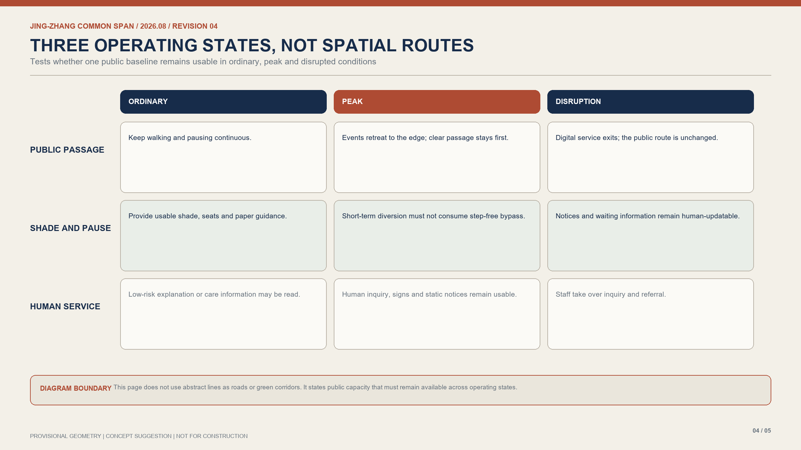
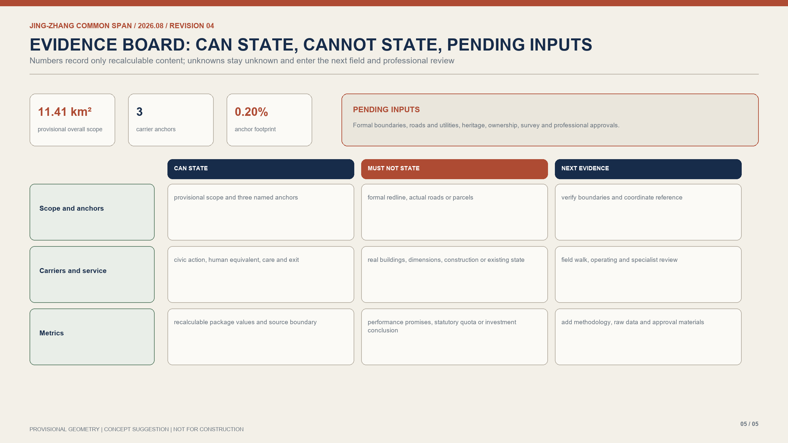

01 / Crossing Span | Zhongzhiyuan
The concept scene only describes crossing, pause and a maintenance interface; clear width, object crossed, rights and care route require verification.
Public carrying capacity precedes every digital service. This atlas does not use unsupported linework to simulate roads, buildings or site layout; it organises the proposal through scope declaration, service rules, Load Cards, operating states and evidence boundaries.
PROVISIONAL GEOMETRY | CONCEPT SUGGESTION | NOT FOR CONSTRUCTION


The concept scene only describes crossing, pause and a maintenance interface; clear width, object crossed, rights and care route require verification.

The concept scene only describes entry, step-free bypass and human inquiry; ownership, fire safety and flow require verification.

The concept scene only describes shade, notice and staffed referral; waiting relation, trees, utilities and operations require verification.


Public call materials, the agent taskbook, source registry, public planning references and package layers.
Current boundary and key-area geometry are provisional and used only for scope declaration, concept relation and recalculation checks.
Five bilingual figures, static review pages, A3 booklets and A0 boards use the same evidence boundary.